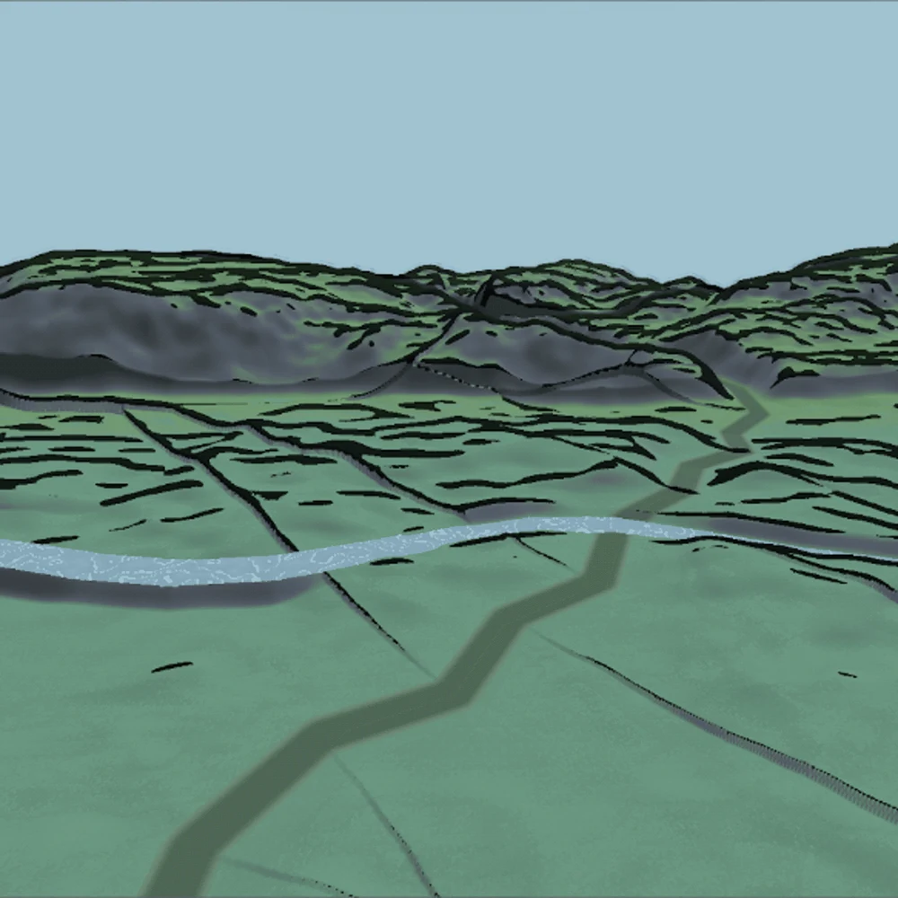

Case study 01 / Procedural generation & game AI
Shaping the journey,
before and during play.
How do you give a generated world a sense of pacing? I connected trail difficulty with runtime event selection and storm control, using a shared pacing target in our CoG demonstration.
Difficulty profiles · Adaptive director · Generation tools · Telemetry
Read the case study